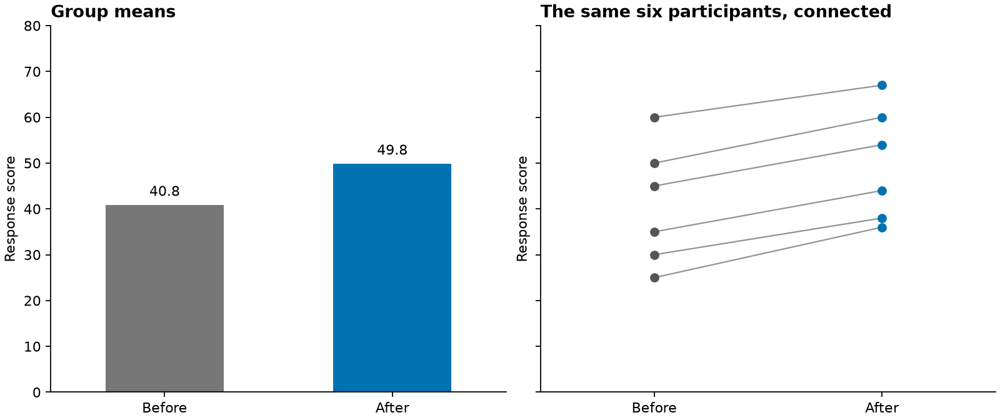

Academic design casebook
Original synthetic teaching examples. These illustrate decisions and their limits; they are not benchmark results or reproduced publication figures.
1. Match precision to the comparison
Question: how stable are the estimates across specifications? Entries are synthetic differences in retention probability; standard errors appear in parentheses. For this illustrative task, sub-0.001 distinctions are not the target. The shorter display retains the visible pattern and keeps full precision in the source. It is not a rule that all coefficients need three decimals, nor a declaration that source precision is scientifically justified.
2. Simplification can erase evidence
Here, the small difference is the point. The three-decimal column is intentionally lossy: it makes two nonzero values look like zero. An explicitly labeled conversion to differences per 10,000 retains the distinction without long decimal strings. The numerical conversion is exact; interpreting these differences still requires study context and uncertainty, which are not supplied in this arithmetic-only example.
3. Match the figure to the unit of comparison

Question: did the same participants change? Group means answer an aggregate question but do not reveal pairing. Connecting the actual matched observations exposes within-person change. Both panels use the same scale. No significance claim is made; six synthetic pairs are not evidence of an intervention effect. With many participants, consider a distribution of changes or another legible paired summary.
4. Exact lookup and interval comparison are different tasks
Both views contain the same estimate and interval information. The table supports exact lookup; aligned marks expose relative interval widths and locations. These are illustrative standardized mean differences, unrelated to the paired data above. Interval overlap is not a general test of pairwise differences; do not declare a winning intervention from this graphic.